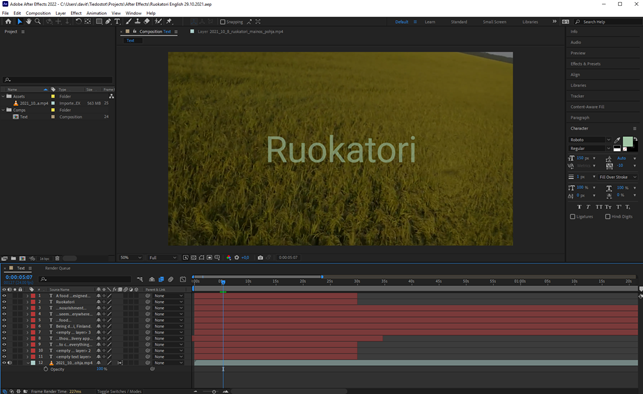
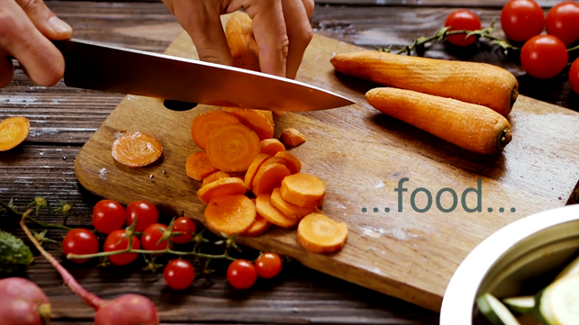
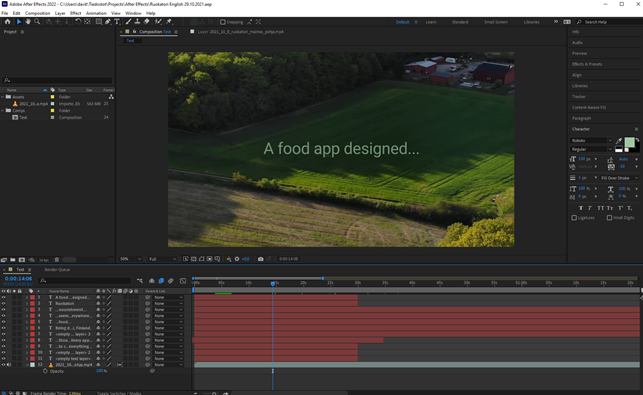
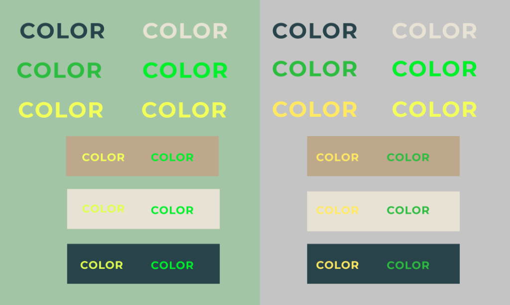
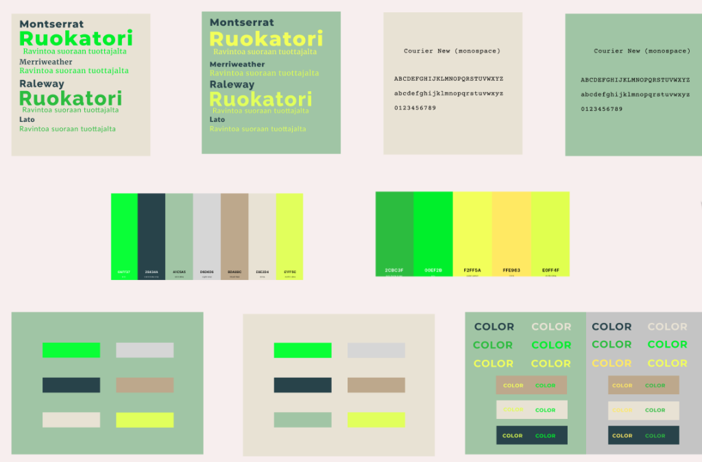
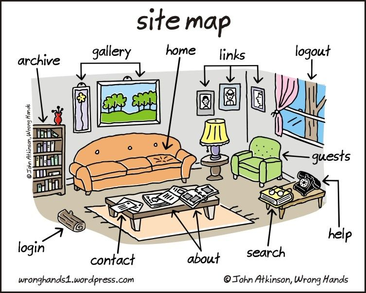
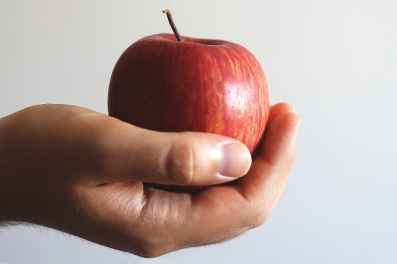

Uutiset
Sprint 6: readying for static prototype release!
These next two weeks will see us building momentum fast towards releasing the prototype version of our static website. We’ve been hard at work bouncing around various ideas that are on our to-do list. For example: we’ve started work on an advertisement! Complete with music done ourselves – Adobe Premiere & After Affects will hopefully lead us to the holy land as we hammer our this 5 minute epic introduction video.
The aim of the video is to display the many beneficial points of using this app compared to others in the market. We hope to use personalized music and powerful imagery to drive home important and necessary points for the modern buyer.
At the end of this sprint we should hopefully have the beginning steps of a beautiful new app to show you all, and in turn a nice base from with to expand ourselves upon!
– Davitt Barry, Ruokatori (Product Owner)
The third sprint in review.
The third sprint saw us implement many useful industry standards into our project. One such standard would be the latest version of Bootstrap (v5.1.1). Without a formal knowledge of CSS and JavaScript, the concept of Bootstrap could seem hard to absorb. Essentially, Bootstrap is a front-end framework used by developers to utilize already made sections of code instead of needlessly typing manually.
With Bootstrap, you can in theory change the entire color theme of your website simply by editing a single file – changing your website appearance on the fly. You can also apply to single elements many typical styles with very little code. This not only saves time, but also improves overall unified functionality within the scope of the site.
We spent the majority of this sprint toying with the Bootstrap settings and functions – tailoring them to our liking and style. As you can see below, our plan is to use this natural and nature-based color theme for our website and app:
By the end of this sprint, we hope to have an entire HTML website prototype ready to be brought into the 4th sprint to be expanded upon!
– Davitt Barry, Ruokatori (Product Owner)
The second sprint begins…
So, we made it through the first sprint! Lots of really interesting concepts we have been brewing up here together over the last two weeks. As well as taking a serious and detailed consideration into the color scheme of our website, we are also full steam ahead on experimental ideas in regards to food delivery in an of itself.
Without giving away too much of our plans and ideas: what if food being delivered to your address or you picking up your food is not the only way to obtain locally produced food? This we shall expand upon is due time!
Right now we are heavy into planning the second sprint. You can find the documentation for this here (In Finnish only, sorry). We want to move heavily towards aesthetically improving the website and improving functionality.
Here’s to exciting progress!
– Davitt Barry, Ruokatori (Product Owner)
The first sprint begins…
Planning out a basic layout for a website is more complex than one would on first glance assume. For the modern person, using a website is rather intuitive and flowing. At least on face value. But, behind the scenes there are multiple ways of planning the structure of a website and how you’d like your customers to navigate this maze. Today is the first day we enter the maze of initial website creation!
If website planning interests you on any level, I would recommended even as a non-programming individual to check out more about site maps and UML sequence diagrams.
We hope to make finding organic and locally produced food easier than ever, and today is so exciting and hopeful as we set out on our app-making journey!
– Davitt Barry, Ruokatori (Product Owner)
Day one!
Today is an exciting day, as we set on towards organizing the documentation for our grand application idea. Food. We want foooooood! Easily accessible, organic and locally sourced. We’ve seen the usefulness of similar food delivery apps in recent years and we feel like there still is room to be played with here.
There’s no reason in 2021 why we cannot source organic and locally produced produce – especially during the covid era. Our goal is to make access to good food cheaper and easier for the buyer and for the seller.
Our team of 5 are dedicated towards creating an excellent app with great benefits for humanity. Today is the first step of many and I’m glad you are with us to witness our journey!
– Davitt Barry, Ruokatori (Product Owner)